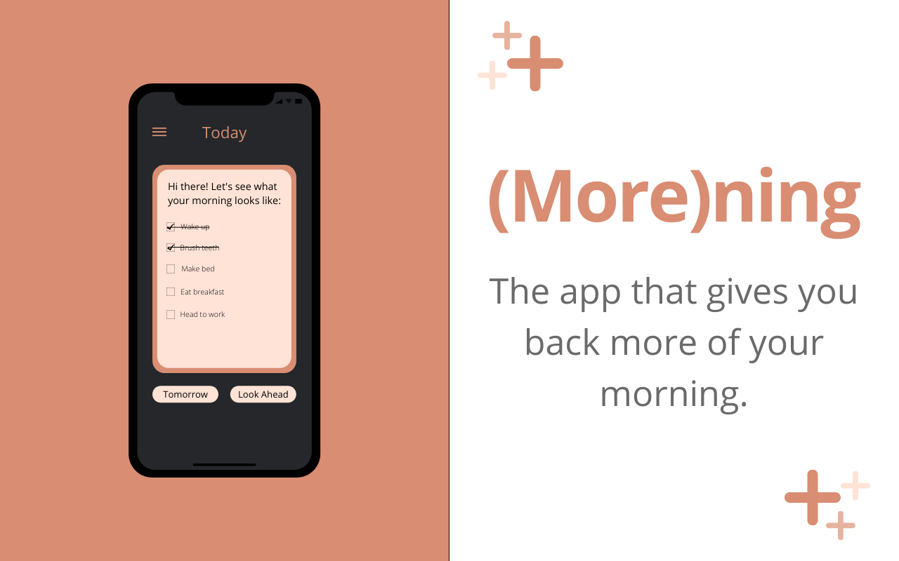
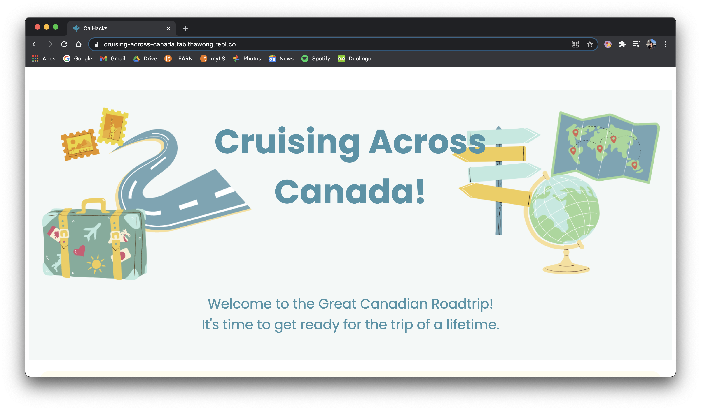
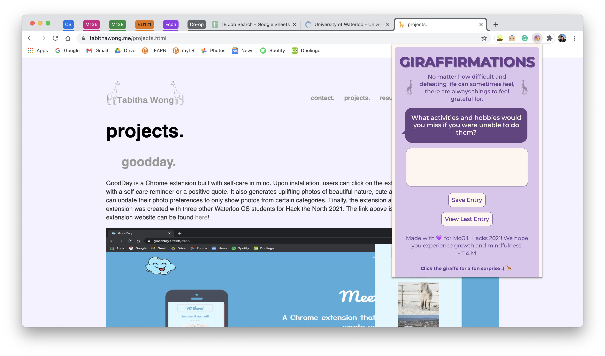
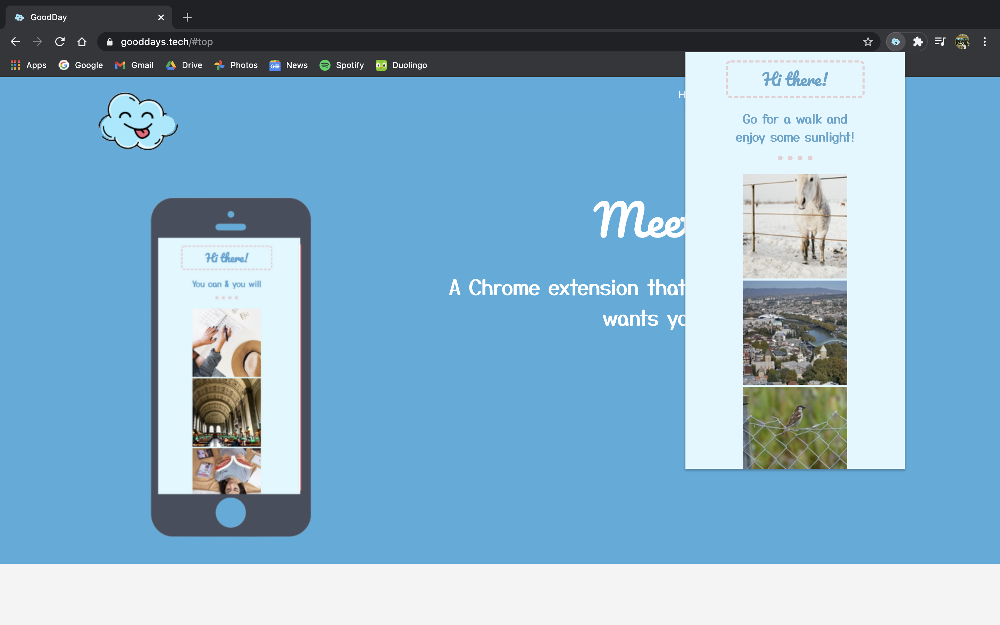
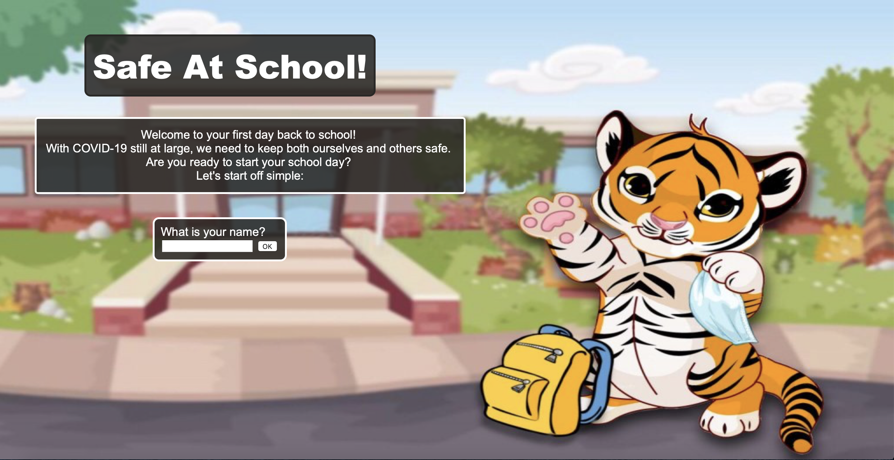
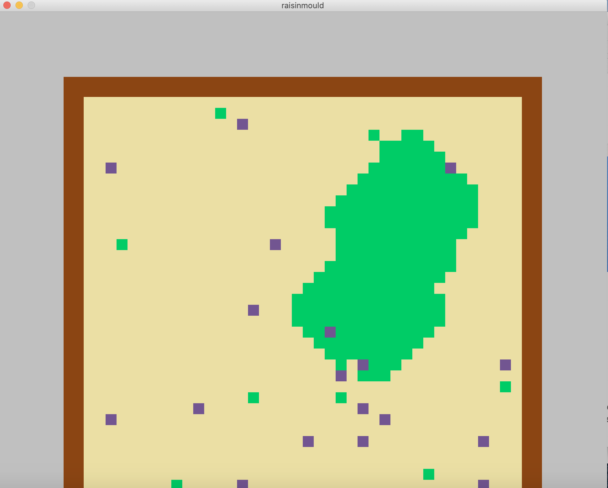
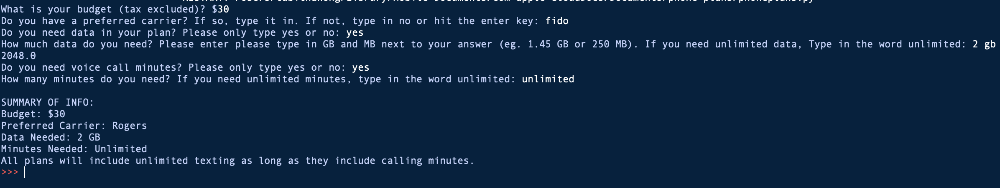

projects.
(More)ning is a cross-platform app that was built to guide users through their morning routine. During the COVID-19 pandemic, many people's lives were upended. Instead of waking each day and getting ready to commute to work or school, mornings became monotonous and hard to keep track of. (More)ning features a to-do list that was designed to be motivating and not overwhelming. Our design choices were strategic: we implemented a default dark mode and only let users see their tasks for this morning, and only up to two days in advance. I worked with Mabel and our friend Anthony (also CS at Waterloo). We were really proud of what we came up and how quickly we learned app development basics. The link above is to the Github repository and the Devpost page can be found here!
Cruising Across Canada is a web-based game that takes players on a virtual roadtrip across Canada. At each stop, players are presented with a brief introduction of the Province or Territory that they've arrived at. They are then brought to a trivia question relating to the location's geography, history, or culture. At the end of the game, players are brought to Calgary so they can participate in Calgary Hacks, which is the hackathon that this project was created for. I worked with Mabel once again and we introduced our friend Nicholas to his first hackathon! We were super surprised when we ended up winning 3rd place overall for our project. The link above is to the actual game and the Devpost page can be found here!
BuyPOC is a web-app created to encourage actionable support for BIPOC owned local businesses in Canada's capital. It displays locations on an interactive map that is filterable for different categories. Each pin on the map contains information on the business' location, website, and country of origin. There is also an option to submit a new business to our database. This extension was created with two of my closest friends: Mabel Luo, who I worked with at my last hackathon, and Tejas Shah, who I met at Shad Calgary in 2019. It was created at UOttaHack 2021 and it was the source of a lot of learning. The link above is to our project's website and the Devpost page can be found here!

Giraffirmations is a Chrome extension designed to help you see the good. It gives users a journaling prompt on launch with a text box to write and save their response. There is also an option to view your latest entry so you can reflect on your past perspectives. Finally, at the bottom of the extension there's a cute little easter egg that redirects you to an uplifting video or playlist. Something kinda like... this. This extension was created with one of my best friends (Mabel Luo), who is also a CS/BBA student at Waterloo/Laurier. It was created at McGill Hacks 2021 and it was SO much fun to make. I learned so much about JavaScript in the process and we ended up winning the "Warm and Fuzzy" superlative! The link above is to our project's Devpost page and the Github repository and installation instructions can be found here!
GoodDay is a Chrome extension built with self-care in mind. Upon installation, users can click on the extension logo and they will be greeted with a self-care reminder or a positive quote. It also generates uplifting photos of beautiful nature, cute animals, or serene study spaces. Users can update their photo preferences to only show photos from certain categories. Finally, the extension also has a "to-do" list function. This extension was created with three other Waterloo CS students for Hack the North 2021. The link above is to our project's website and its Devpost link can be found here!
Safe at School is a web-based interactive game that aims to teach elementary school students how to follow public health guidelines for COVID-19 at school. Users are greeted with a personalized welcome screen after entering their name. They are then led through a series of realistic situations that may occur in a regular school day. This game was created with a team of three other Waterloo CS students for the 2020 Ignition Hacks hackathon. It was the winner for the "Best Presentation" category for Division Delta. The link above takes you straight to the game and the link to its Devpost page can be found here! The game is best enjoyed on Google Chrome with the volume up!
This Python-made game tests your ability to spot spelling mistakes. Players are challenged to makr a certain amount of spelling tests accoridng to the level they select at the beginning of the game. There is a mix of perfect tests (to which you must give a gold star) and tests with a mistake.

This simulation (created with Processing) depicts the growth of mould on a slice of raisin bread. It incorporates cellular automata concepts in order to decide if a cell becomes mouldy or not. Users can change a variety of factors to influence mould growth, such as light, temperature, and humidity.
This Python program helps users find what phone plan best suits their needs. It takes in parameters such as price, minutes needed, data needed, and preferred carrier.
